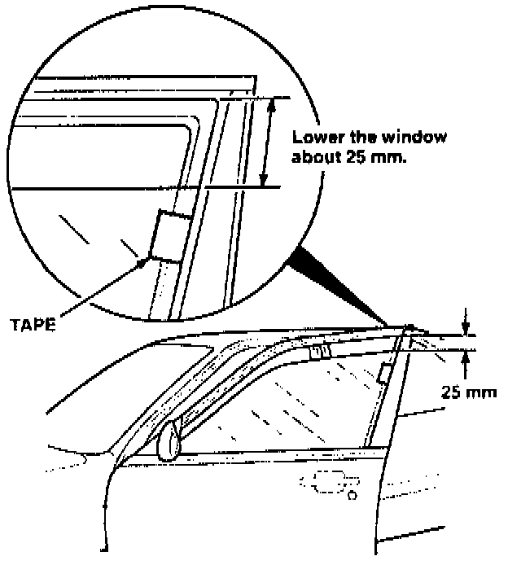
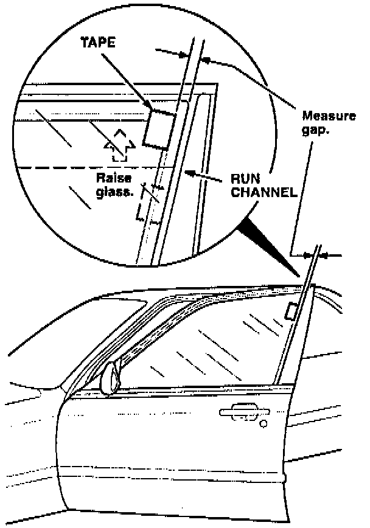
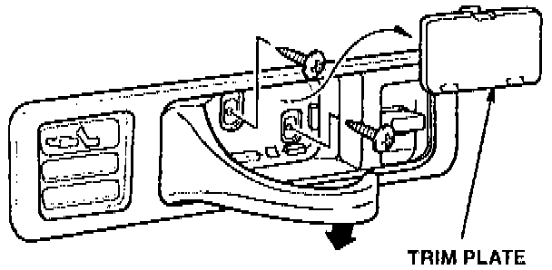
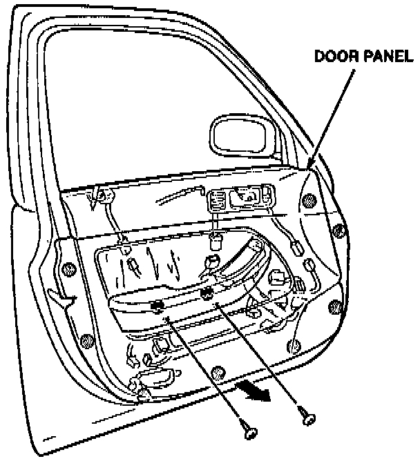
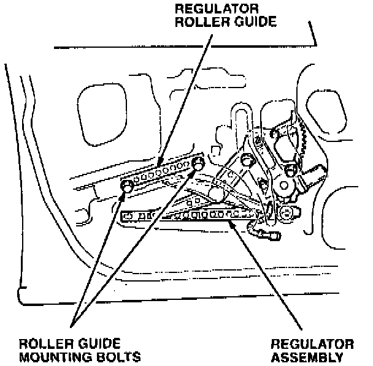

Door Glass Alignment Inspection and Adjustment
Door Glass Alignment Inspection and AdjustmentDoor Glass Inspection:

1. Lower the window about 25 mm. Place a piece of masking tape along the rear edge of the glass against the lip of the run channel.
Door Glass Inspection:

2. Raise the glass fully. Measure the gap between the tape and the run channel lip.
^ If the gap is greater than 2 mm, continue with Step 3.
^ If the gap is less than 2 mm, go to Glass Run Channel Replacement.
Inside Door Handle:

3. Remove the trim plate and the two mounting screws from the inside door handle.
Interior Door Panel:

4. Remove the two mounting screws and the armrest. Unclip the mounting clips along the lower part of the door. Leave the upper part of the door panel attached.
5. Use a razor blade to cut the adhesive along the lower edge of the plastic cover. Peel back the lower edge so you can access the roller guide mounting bolts.
Window Regulator Assembly:

6. Inspect the position of the two roller guide mounting bolts.
^ If the mounting bolts are not bottomed in their slots, continue with step 7.
^ If the mounting bolts are bottomed in their slots, go to Glass Run Channel Replacement
7. Lower the glass about 25 mm. Loosen both roller guide mounting bolts. Pull the rear bolt down until it bottoms in the slot, then tighten both bolts to 8 Nm (0.8 kg-m, 5.8 lb.ft). If you cannot get the bolts to bottom in their slots, apply downward pressure to the bolt as you lower the glass.
8. Raise and lower the glass several times to check for free movement. Then repeat steps 1 and 2.
^ If the gap is now less than 2 mm, continue with step 9.
^ If the gap is still greater than 2 mm, go to Glass Run Channel Replacement.
9. Test drive the car.
^ If the wind noise has disappeared, reinstall the plastic cover, door panel, and all remaining parts.
^ If the wind noise is still present, go to Glass Run Channel Replacement.